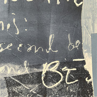

|
Magne's 11 track album "Living With Ourselves" is due for release in 2025. Magne has produced a special limited edition vinyl of the album which he has created himself by mixing colours, making each of the 200 pressings unique. They were made available to order on 1 November 2024 and sold out very quickly. The discs are a mix of red, orange, yellow, green and black colours and some are very different from others. The disc comes in a LP gatefold sleeve with cover design by Magne. It features one of his art prints with a blue & cream background and large grey, red, orange, beige, black white and brwon letters spelling out "mAgneFIEd" which goes across the front and back of the sleeve. magne furuholmen and living with ourselves are printed in small white letters towards the top of the front sleeve and the tracks are printed in two columns in small white and dark red letters on the reverse. The inside of the gatefold has a beige and white with paint/water splats background with the lyrics printed in columns across the sleeve. Each sleeve is individually numbered and signed. The disc labels also feature Magne's art, side a in blue, beige, white and grey colurs and side b with red, white, blue and orange.  Tracks: look how far we haven’t come / one 4 all and all 4 none / living with ourselves / god is in the details / teo’s theme / time is on your side // white horses / world so strange / you won (and then some) / giving in to christmas / hold the line Download
| Next release | Menu | Back to Main | |
{kind=link}
{kind=link}
{kind=link}
{kind=link}